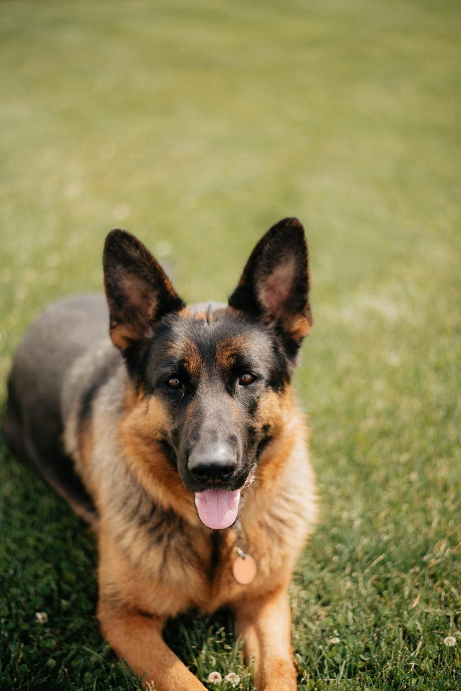

German Shepherd
Needs a job. Will invent one. You won't like what it picks.

German Shepherds were built to think, and it shows in everything they do. They're confident, alert, and deeply loyal to their people — often to the point of being wary with strangers until they've decided you're okay. This isn't fearfulness, it's a working dog doing its job: assessing the situation before committing.
That same intelligence cuts both ways. A Shepherd with a job — training, a task, a role in the household — is a joy. A Shepherd with nothing to do gets creative in ways you won't appreciate, from destructive chewing to developing anxious habits. This is a breed that needs a purpose, not just a walk.
German Shepherds typically live 9–13 years and carry more breed-specific health baggage than most. Hip and elbow dysplasia are well-documented risks, largely tied to how the breed has been bred over decades — sourcing from a breeder who screens for it matters more here than almost anywhere else.
Degenerative myelopathy, a progressive spinal cord disease, shows up at meaningfully higher rates in this breed. Bloat is also a real risk given their deep chest. Exocrine pancreatic insufficiency, while less common, is disproportionately a German Shepherd problem — watch for chronic weight loss despite a normal appetite.
Large-breed puppy formula matters more here than in most breeds — controlled calcium and growth rate during the first year meaningfully affects joint development and lifetime hip health. This isn't a place to save money on food.
Adult Shepherds do well on a high-quality diet with joint-supportive nutrients built in from the start, not added after problems appear. Because bloat risk is real, split meals and post-meal rest periods are worth building into the routine early rather than treating as optional.
German Shepherds are excellent family dogs when properly socialized early — they're protective, patient with kids they've bonded with, and famously loyal. That protectiveness needs early, consistent socialization to strangers and other dogs, or it can tip into over-guarding rather than healthy watchfulness.
They do best with families who can commit to real training, not just basic obedience. This is a breed that was bred to work alongside people, and households that treat them as a true partner — not a background pet — get the best version of this dog.
This is one of the most capable, trainable breeds that exists, and that's exactly why it ends up in the wrong hands so often. People want the loyalty and the presence without doing the work the breed actually needs — daily mental engagement, real training, and enough physical output to match that engine.
If you're prepared to put in consistent structure and give this dog an actual job — obedience sport, real hiking, scent work, something — you get one of the most rewarding partnerships in the dog world. If you're looking for something low-key that figures itself out, this isn't it.